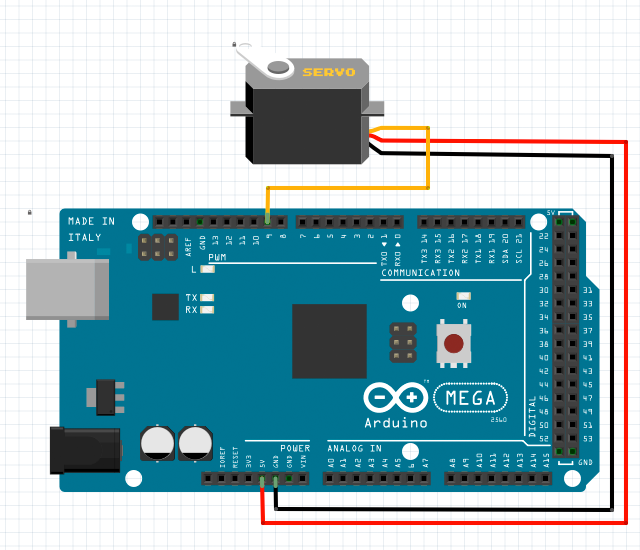

RUDDER ANGLE:
ENABLE:

var rudder1 = new RudderServo();
// set up a rudder servo wired with pin 9 on unit 1
rudder1.setup(1, 9);
rudder1.setAngle(0); // rudder angle is set to 0 degrees
rudder1.setAngle(90); // rudder angle is set to 90 degrees
rudder1.setAngle(180); // rudder angle is set to 180 degrees
// get current rudder angle
rudder1.whenGetAngle = function(angle) {
alert("present rudder angle is " + angle + " degrees.");
};
rudder1.getAngle();
rudder1.setEnable(1); // enable the rudder servo
rudder1.setEnable(0); // disable the rudder servo
// get current rudder servo enable state
rudder1.whenGetEnable = function(enable) {
alert("rudder servo is " + (enable ? "enabled" : "disabled" ) + ".");
};
rudder1.getEnable();
The angle value can be set for controlling the rudder position.
The allowed angle value can range between 0 and 180 degrees.
RudderServo
setup(unit, pin)
initialize a rudder servo object with a specified pin on a specified unit.
return value: true if successful, otherwise false.
setAngle(angle)
set the angle value for changing the rudder position between 0 and 180 degrees.
return value: true if successful, otherwise false.
getAngle()
request to get the current angle value of the rudder servo, an event callback whenGetAngle() will be received later.
return value: the rudder position, a number between 0 to 180.
setEnable(enable)
set the enable state of the rudder servo. 0 is for disabling the servo, but 1 is for enabling the servo.
return value: true if successful, otherwise false.
getEnable()
request to get the current enable state of the rudder servo, an event callback whenGetEnable() will be received later.
return value: number 0 means servo disabled, number 1 means servo enabled.
Return Value Note:
The function will return a value when your h5control program uses waitRsp mode, but no return value when uses nowaitRsp mode.
whenSetup(done)
receive the callback when setup done. parameter done is true if successful or false otherwise.
whenSetAngle(angle)
receive the callback when the rudder angle is changed.
whenGetAngle(angle)
receive the callback to to get the current rudder angle after called function getAngle().
whenSetEnable(enable)
receive the callback when the enable state is changed.
whenGetEnable(enable)
receive the callback to to get the current enable state after called function getEnable().